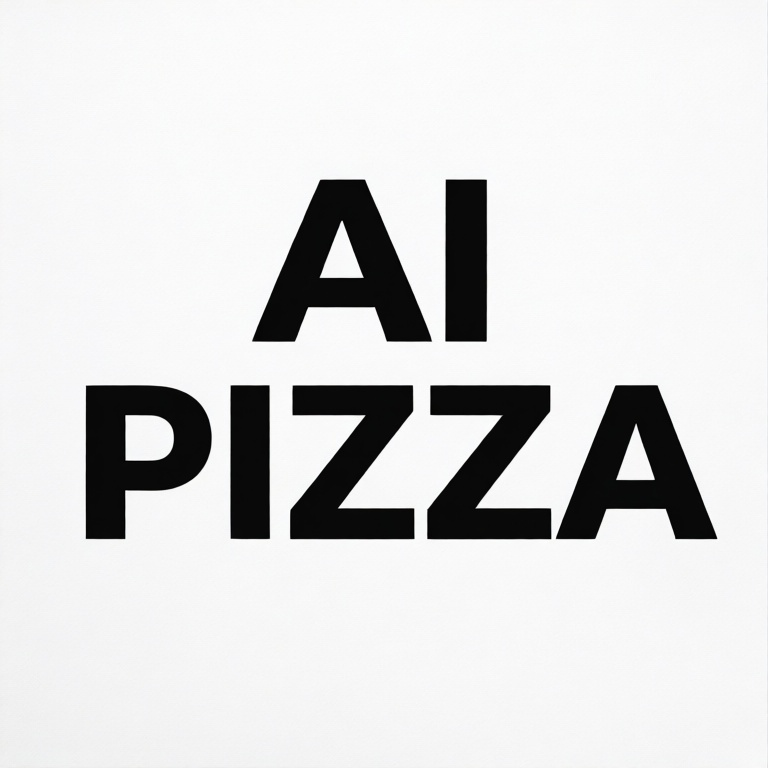
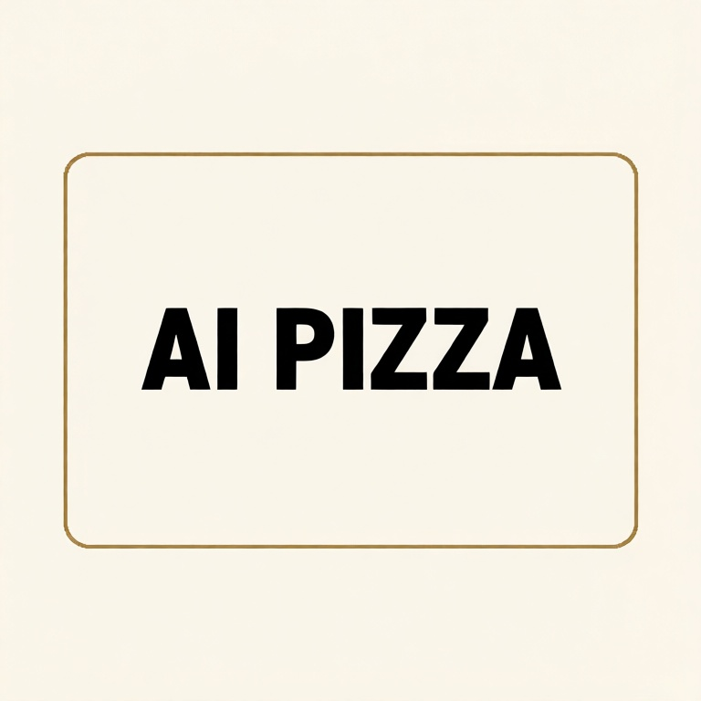
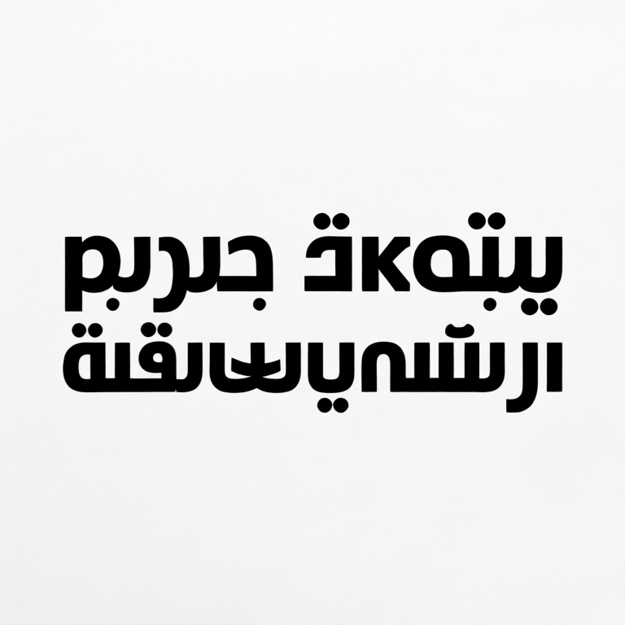
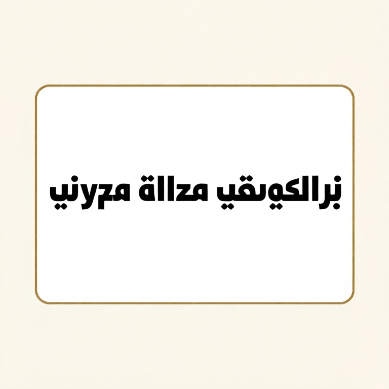
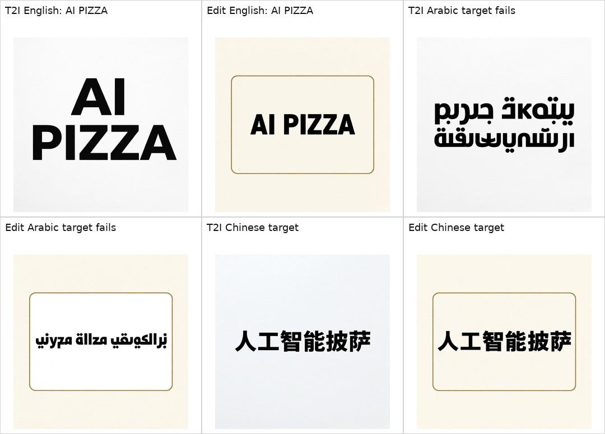
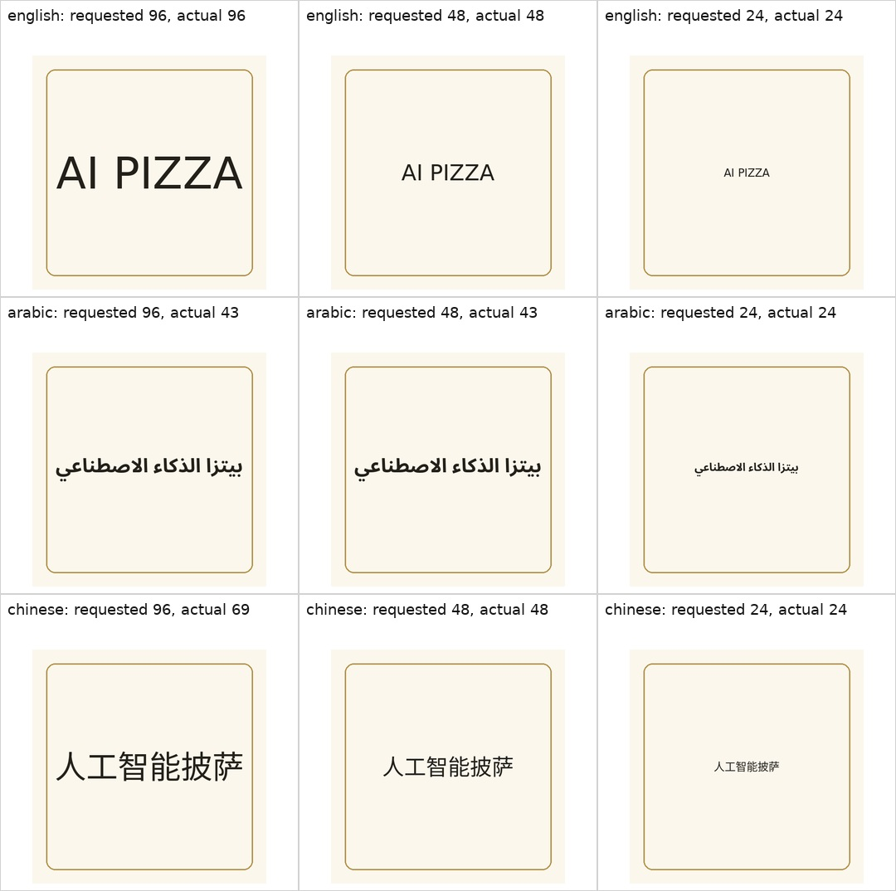
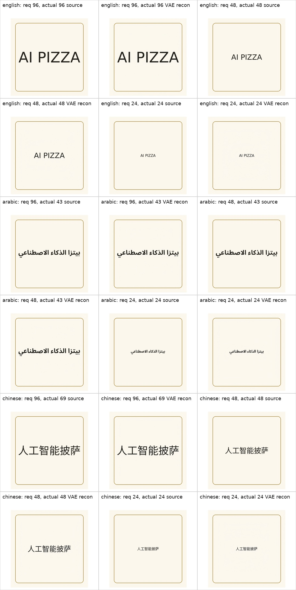
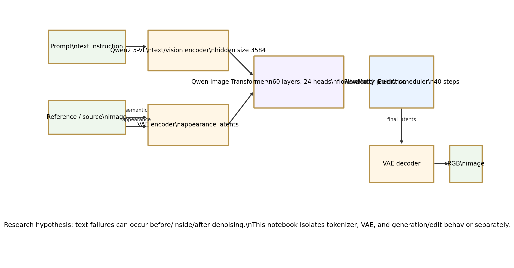

Qwen Image Edit Text Rendering Study
A readable page for the first controlled experiment. It compares English, Arabic, and Chinese text rendering under the same Qwen Image Edit settings, then checks whether the VAE itself destroys already-rendered glyphs.
Source notebook: notebooks/qwen_edit_text_failure_study.ipynb
Result In One Minute
Large text is rendered correctly in both text-to-image and blank-card edit.
Qwen draws Arabic-like glyphs, but the requested phrase is not preserved.
Chinese is exact or close enough in both scenarios under the same settings.
Important correction: the synthetic VAE controls now auto-fit long Arabic and Chinese phrases before VAE encoding. The earlier clipped control images were misleading.
Actual Qwen Outputs
Fixed seed 20260616, size 768x768, 40 steps,
true CFG 4.0, beta scheduler, and prompt enhancement disabled.





VAE Probe: Corrected Control Images
We render clean text ourselves, then pass it through the Qwen VAE encoder/decoder. This isolates VAE reconstruction from Qwen generation. Long phrases are now fitted inside the card before encoding, so the probe is not based on clipped source images.


| Language | Requested Sizes | Actual Fitted Sizes | SSIM Range | Meaning |
|---|---|---|---|---|
| English | 96, 48, 24 | 96, 48, 24 | 0.9977 - 0.9983 | VAE preserves clean Latin glyphs well. |
| Arabic | 96, 48, 24 | 43, 43, 24 | 0.9984 - 0.9986 | VAE preserves already-rendered Arabic well in this fitted control. |
| Chinese | 96, 48, 24 | 69, 48, 24 | 0.9979 - 0.9984 | VAE preserves already-rendered Chinese well in this fitted control. |
The VAE can still become a bottleneck for tiny dense text. This first probe only says: for these clean fitted controls, Arabic failure is not explained by VAE reconstruction alone.
Tokenizer Probe, Made Readable
The tokenizer probe is about prompt conditioning, not rendered glyphs. Raw tokenizer pieces are byte-level and can look corrupted, so this table uses decoded token previews.
| Language | Text | Chars | Tokens | Decoded Token Preview |
|---|---|---|---|---|
| English | AI PIZZA | 8 | 4 | AI PIZZA |
| Arabic | بيتزا الذكاء الاصطناعي | 22 | 11 | بيتزا الذكاء الاصطناعي |
| Chinese | 人工智能披萨 | 6 | 3 | 人工智能披萨 |
| English short | MENU | 4 | 1 | MENU |
| Arabic short | قائمة | 5 | 3 | قائمة |
| Chinese short | 菜单 | 2 | 1 | 菜单 |
Token count alone does not explain the result. Arabic has more tokens, but the bigger issue is likely the model’s learned mapping from prompt tokens to correct shaped glyph sequences during denoising.
Architecture: Where Failure Can Happen

Measured So Far
English and Chinese large text succeed under the starter settings.
Arabic fails under the same starter settings.
The corrected VAE probe preserves already-rendered Arabic.
Still Unknown
Which transformer layers or attention heads encode glyph identity.
How much of Arabic failure is from data prior versus objective versus prompt conditioning.
Whether reference-glyph copy can rescue Arabic without finetuning.
Next Experiments
The completed follow-up batch is available as separate pages: open the next-experiments index.
- Same Arabic phrase over multiple seeds.
- Large / medium / small text sizes for English, Arabic, Chinese.
- Reference-glyph copy: provide the exact Arabic text as an input image and ask Qwen to preserve/copy it.
- Background complexity: white card, textured poster, realistic sign, food infographic.
- Instrument prompt embeddings and latents if we want to move from behavioral study to internals study.